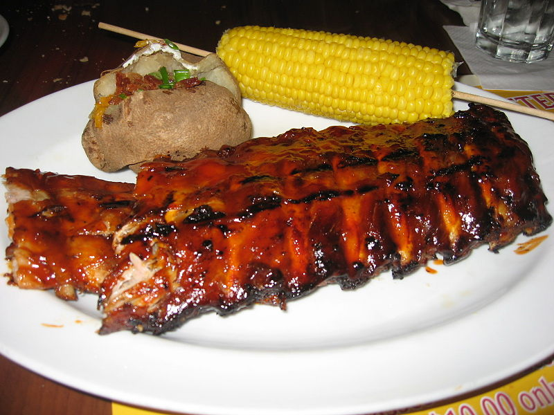

Baby Ribs

Desription
Wondering how to grill baby back ribs? You'll find a detailed ingredient list and step-by-step instructions in the recipe below, but let's go over the basics:
- Make the spice rubs.
- Trim the ribs, then season sith the spice mix.
- Cook the ribs on the grill according to the detailed recipe below.
- Brush the grilled baby back ribs with barbecue sauce.
- Grill for five more minutes.
Ingredients
- 1 tablespoon ground cumin
- 1 tablespoon chili powder
- 1 tablespoon paprika
- salt and pepper to taste
- 3 pounds baby back pork ribs
- 1 cup barbeque sauce
Steps
- Preheat a gas grill for high heat, or arrange charcoal briquettes on one side of the barbeque. Lightly oil the grate.
- Combine cumin, chili powder, paprika, salt, and pepper in a small jar; close the lid and shake to mix.
- Trim the membrane sheath from the back of each rack. Run a small, sharp knife between the membrane and each rib, and snip off the membrane as much as possible. Sprinkle as much of the rub onto both sides of ribs as desired. To prevent ribs from becoming too dark and spicy, do not thoroughly rub spices into ribs. Store any unused spice mix in a jar for future use.
- Place aluminum foil on the lower rack to capture drippings and prevent flare-ups. Lay ribs on the top rack of the grill (away from the coals, if you're using briquettes). Reduce gas heat to low and close the lid; cook ribs, undisturbed as possible, until meat pulls away easily from the bone, about 1 hour. An instant-read thermometer inserted into the center should read 145 degrees F (63 degrees C).
- Brush ribs with barbecue sauce, and grill for an additional 5 minutes. Serve ribs as a whole rack, or cut between each rib bone and pile individually on a platter.